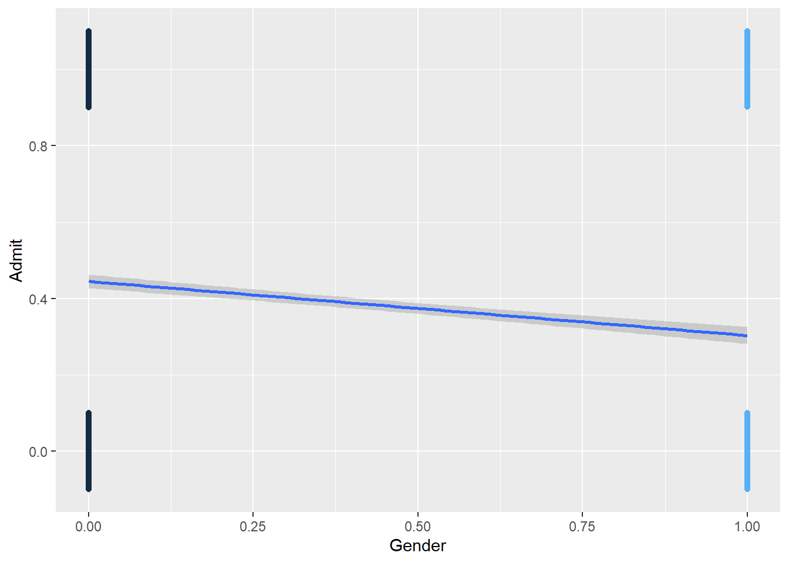
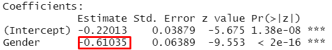
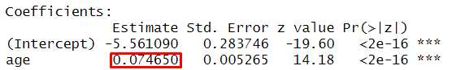
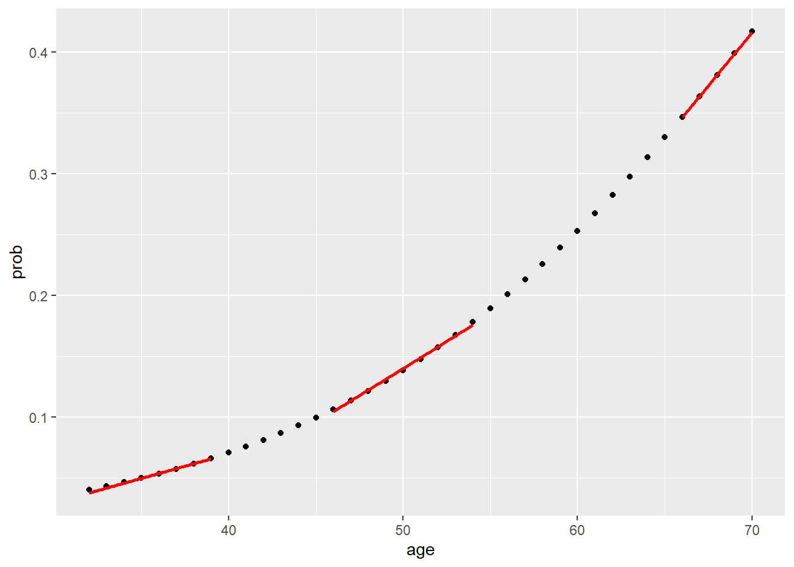
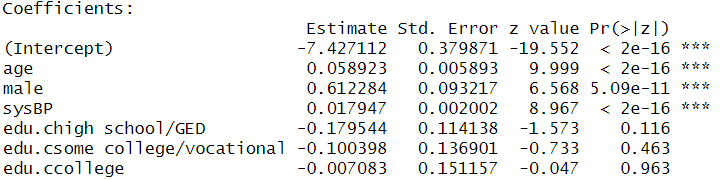

Chapter 6 Binary Logistic Regression
library(rio); library(ggplot2); library(QuantPsyc); library(psych); library(car); library(reshape)Binary logistic regression is a form of regression which is used when the DV is a dichotomy and the IVs are of any type. It belongs to generalized linear models.
- For a binary DV, we have two possible outcomes. Let’s take a look at the
UCBAdmissionsdataset built into R.
# View(UCBAdmissions)
class(UCBAdmissions) # the dataset is a table## [1] "table"dat <- as.data.frame(UCBAdmissions) # convert the table to a data frame
class(dat)## [1] "data.frame"dat <- reshape::untable(df = dat[, !names(dat) %in% c("Freq")], num=dat$Freq)
# View(dat)Let’s answer the question: Is there a relationship between gender and admission? Alternatively, do males have a higher chance of being admitted than females? For now, let’s also recode the variables Admit and Gender to be numeric variables with “0”s and “1”s. For the Admit variable, Admitted = 1, Rejected = 0. For the Gender varable, 1 = Female, 0 = Male.
contingency_table1 <- table(dat$Gender, dat$Admit) # contingency table. row is Gender; column is Admit
addmargins(contingency_table1)
prop.table(contingency_table1) # cell percentages
prop.table(contingency_table1, 1) # row percentages
prop.table(contingency_table1, 2) # column percentages##
## Admitted Rejected Sum
## Male 1198 1493 2691
## Female 557 1278 1835
## Sum 1755 2771 4526
##
## Admitted Rejected
## Male 0.2646929 0.3298719
## Female 0.1230667 0.2823685
##
## Admitted Rejected
## Male 0.4451877 0.5548123
## Female 0.3035422 0.6964578
##
## Admitted Rejected
## Male 0.6826211 0.5387947
## Female 0.3173789 0.4612053dat$Admit <- ifelse(dat$Admit=="Admitted", 1, 0)
dat$Gender <- ifelse(dat$Gender=="Female", 1, 0)
contingency_table2 <- table(dat$Gender, dat$Admit) # contingency table. row is Gender; column is Admit
addmargins(contingency_table2)
ggplot(dat, aes(x=Gender, y=Admit, color = Gender)) +
geom_jitter(width=0, height=0.1) +
geom_smooth(method = "lm") +
theme(legend.position = "none")
##
## 0 1 Sum
## 0 1493 1198 2691
## 1 1278 557 1835
## Sum 2771 1755 45266.1 Some Definitions
Probability of an Event
Event = Being admitted to college
Probability of the event P(Admitted) = 0.6
Odds of an Event
- Odds is the relative chance of an event
- Odds of being admitted = \(\frac{{P(Admitted)}}{{1 - P(Admitted)}} = \frac{{.6}}{{.4}} = 1.5\)
If you know the probability of an event, you can get the odds and vice versa.
Logit = Log-Ods of an Event
- Logit is the logarithm of the odds. Logit = log(odds)
- Odds of being admitted = \(\frac{{P(Admitted)}}{{1 - P(Admitted)}} = \frac{{.6}}{{.4}} = 1.5\)
- Logit of being admitted = \({\log _e}(Odds(Admitted)) = {\log _e}(1.5) = .405\)
If you know the one of the three: probability, odds, and logit, you can get the values for the other two.
6.2 Logarithm Rules
\[{\log _b}(XY) = {\log _b}(X) + {\log _b}(Y)\] \[{\log _b}(\frac{X}{Y}) = {\log _b}(X) - {\log _b}(Y)\] \[{\log _b}({X^k}) = k{\log _b}(X)\] \[{\log _b}(1) = 0\] \[{\log _b}(b) = 1\]
\[{\log _b}({b^k}) = k\] \[{b^{{{\log }_b}(k)}} = k\]
Given \({\log _e}(A) = 1.5\), what is A?
\(A = {e^{{{\log }_e}(A)}} = {e^{1.5}} = {(2.718282)^{1.5}}\) where \(e\) is a mathematical constant often called Euler’s (pronounced “Oiler”) number.
exp(1.5)## [1] 4.481689Given logit = 3, what is the odds?
logit = \({\log _e}(Odds) = 3\)
\(Odds = {e^3}\)
exp(3)## [1] 20.085546.3 Logistic Regression Equation
Regular OLS Regression \[Y = a + bX + e\] \[\hat Y = a + bX\]
Logistic Regression \[{\rm{logit}} = a + bX\] \[Odds = {e^{(a + bX)}}\] \[P(Y = 1) = \frac{{{e^{a + bX}}}}{{1 + {e^{a + bX}}}} = \frac{1}{{1 + {e^{ - (a + bX)}}}}\]
6.4 Run Logistic Regression
model <- glm(Admit ~ Gender, family = binomial, data = dat)
summary(model)##
## Call:
## glm(formula = Admit ~ Gender, family = binomial, data = dat)
##
## Deviance Residuals:
## Min 1Q Median 3Q Max
## -1.0855 -1.0855 -0.8506 1.2722 1.5442
##
## Coefficients:
## Estimate Std. Error z value Pr(>|z|)
## (Intercept) -0.22013 0.03879 -5.675 1.38e-08 ***
## Gender -0.61035 0.06389 -9.553 < 2e-16 ***
## ---
## Signif. codes: 0 '***' 0.001 '**' 0.01 '*' 0.05 '.' 0.1 ' ' 1
##
## (Dispersion parameter for binomial family taken to be 1)
##
## Null deviance: 6044.3 on 4525 degrees of freedom
## Residual deviance: 5950.9 on 4524 degrees of freedom
## AIC: 5954.9
##
## Number of Fisher Scoring iterations: 4dat$prob <- fitted(model)
head(dat)## Admit Gender Dept prob
## 1 1 0 A 0.4451877
## 1.1 1 0 A 0.4451877
## 1.2 1 0 A 0.4451877
## 1.3 1 0 A 0.4451877
## 1.4 1 0 A 0.4451877
## 1.5 1 0 A 0.44518776.5 Logistic Regression Coefficients

\({\log _e}(\frac{{P(Admitted)}}{{1 - P(Admitted)}}) = - 0.22 - 0.61*Gender\)
- The outcome is the logit!
- Which group (male vs. female) has a higher logit value?
- How to interprete?
- “The logit of the female group is 0.61 lower than the logit of the male group.”
- What does this mean?
\(- 0.61 = {\rm{logit}}(Female) - {\rm{logit}}(Male)\)
\({\rm{ }} = {\log _e}[Odds(Female)] - {\log _e}[Odds(Male)]\)
\({\rm{ }} = {\log _e}[\frac{{Odds(Female)}}{{Odds(Male)}}]\)
Therefore, \(\frac{{Odds(Female)}}{{Odds(Male)}} = \exp (- 0.61) = 0.54\)
This is called Odds Ratio. Odds Ratio is the ratio of odds of a comparison/treatment group to that of the reference/control group.
Note: For the UCBAdmissions data, if you conduct a binary logistic regression model for each department separately, you may reach different conclusions regarding gender differences in college admissions. Google .blue[Simpson’s paradox] to learn more.
6.6 Similarities and Differences Between Binary Logistic Regression and OLS Regression
Similarities
- IVs can be continuous, categorical, or a combination of continuous and categorical variables.
- Many of the essential concepts in OLS regression still apply to logistic regression.
- Model comparison and selection
- Assumptions (Independence of Errors, Linearity, Multicollinearity; but NOT Normality)
- Diagnostics (Leverage, Discrepancy, Influence)
Differences
- DV is categorical in logistic regression
- The DV in logistic regression follows a Binomial distribution for which you can specify a link function (logit and probit are two commonly used link functions)
- The estimation method for logistic regression is maximum likelihood, rather than OLS.
6.7 Empirical Example
DV : Coronary Heart Disease (TenYearCHD, yes=1; no=0) status was collected 10 years after the first exam.
IVs were collected in the first data collection
- Demographic factors
- male(male = 1, female = 0)
- age (in years)
- education (Some high school=1, high school/GED=2; some college/vocational school=3; college=4)
- Behavioral risk factors
- currentSmoker (smoker=1, non smoker=0)
- cigsPerDay
- Medical history risk factors
- BPmeds (On blood pressure medication at time of first exam)
- prevalentStroker (Previously had a stroke)
- prevalentHyp (Current hypertension/high blood pressure)
- diabetes (currently has diabetes)
- Risk factors from first examination
- totChol (Total cholesterol, mg/dL)
- sysBP (Systolic blood pressure)
- diaBP (Diastolic blood pressure)
- BMI (Body Mass Index, weight (kg)/height (m^2))
- heartRate (Heart rate, beats/minute)
- glucose (Blood glucose level, mg/dL)
- Demographic factors
dat <- import("data/framingham.csv")
model <- glm(TenYearCHD ~ age, family = binomial, data = dat)
summary(model)##
## Call:
## glm(formula = TenYearCHD ~ age, family = binomial, data = dat)
##
## Deviance Residuals:
## Min 1Q Median 3Q Max
## -1.0386 -0.6261 -0.4580 -0.3695 2.4493
##
## Coefficients:
## Estimate Std. Error z value Pr(>|z|)
## (Intercept) -5.561090 0.283746 -19.60 <2e-16 ***
## age 0.074650 0.005265 14.18 <2e-16 ***
## ---
## Signif. codes: 0 '***' 0.001 '**' 0.01 '*' 0.05 '.' 0.1 ' ' 1
##
## (Dispersion parameter for binomial family taken to be 1)
##
## Null deviance: 3612.2 on 4239 degrees of freedom
## Residual deviance: 3396.6 on 4238 degrees of freedom
## AIC: 3400.6
##
## Number of Fisher Scoring iterations: 5Regression Coefficient 
Odds Ratios and Confidence Intervals
exp(model$coefficients)## (Intercept) age
## 0.003844584 1.077507075exp(confint(model))## 2.5 % 97.5 %
## (Intercept) 0.002190705 0.006664767
## age 1.066517962 1.088765650- One year increase in age is related to 0.075 increase in the logit of having CHD
- Given logit = 0.075, we obtain exp(0.055) = 1.08
- One year increase in age changes the odds of CHD from 1 to 1.08
To Obtain Probabilities
dat$prob <- fitted(model) #<<
df_low_prob <- dat[dat$age < 40, ]
df_mid_prob <- dat[dat$age >45 & dat$age <55, ]
df_high_prob <- dat[dat$age >65,]
ggplot(dat, aes(x=age, y=prob)) +
geom_point() +
geom_smooth(data = df_low_prob, method = "lm", se = FALSE, color = "red") +
geom_smooth(data = df_mid_prob, method = "lm", se = FALSE, color = "red") +
geom_smooth(data = df_high_prob, method = "lm", se = FALSE, color = "red")
The relationship between age and CHD is positive but not linear.
6.7.1 Assess the model - model chi-square
How much better does the model predict the outcome variable, compared to a baseline model?
- log-likelihood of the model. Analogous to the residual sum of squares in OLS regression
- deviance = -2 X log-likelihood. It has a chi-square distribution.
- model chi-square statistic. Difference between the deviance of the baseline model and the deviance of the current model.
# summary(model)
model.chisq <- model$null.deviance - model$deviance
chisq.df <- model$df.null - model$df.residual
(chisq.prob <- 1 - pchisq(model.chisq, chisq.df)) # right tailed## [1] 06.7.2 Assess the model - \({R^2}\)
logisticPseudoR2s <- function(LogModel) {
dev <- LogModel$deviance
nullDev <- LogModel$null.deviance
modelN <- length(LogModel$fitted.values)
R.1 <- 1-dev/nullDev
R.cs <- 1-exp(-(nullDev-dev)/modelN)
R.n <- R.cs/(1-(exp(-(nullDev/modelN))))
cat("PseudoR^2 for logistic regression\n")
cat("Hosmer & Lemeshow R^2: ", round(R.1, 3), "\n")
cat("Cox & Snell R^2: ", round(R.cs, 3), "\n")
cat("Naelkerke R^2: ", round(R.n, 3), "\n")
}
logisticPseudoR2s(model)## PseudoR^2 for logistic regression
## Hosmer & Lemeshow R^2: 0.06
## Cox & Snell R^2: 0.05
## Naelkerke R^2: 0.0866.7.3 Diagnostics
dat$leverage <- hatvalues(model) # leverage
dat$studentized.residuals <- rstudent(model) # discrepancy
dat$cooks.d <- cooks.distance(model) # influence
dat$leverage[(dat$leverage > 3 * mean(dat$leverage))] ## [1] 0.001661901 0.001459850 0.001459850 0.001661901 0.001459850 0.001459850 0.001661901 0.001661901 0.001459850 0.001661901 0.001880347
## [12] 0.001661901 0.001661901 0.001880347 0.001459850 0.001459850 0.001661901 0.001459850 0.001661901 0.001661901 0.001661901 0.001459850
## [23] 0.001880347 0.001459850 0.001459850 0.001459850 0.001661901 0.001661901 0.001661901 0.001459850 0.001661901 0.001661901 0.001880347
## [34] 0.001661901 0.001459850 0.001459850 0.001880347 0.001459850 0.001459850 0.001661901 0.001661901 0.001661901 0.001661901 0.001661901
## [45] 0.001459850 0.002362781 0.001459850 0.001459850 0.001661901 0.001459850 0.001459850 0.001661901 0.001459850 0.001661901 0.001880347
## [56] 0.001459850 0.001661901 0.001459850 0.001459850 0.001459850 0.001459850 0.001459850 0.001661901 0.001661901 0.001880347 0.001661901
## [67] 0.001661901 0.001459850 0.001880347 0.001661901 0.001880347 0.001661901 0.001661901 0.001880347 0.001661901 0.001661901 0.001661901
## [78] 0.001880347 0.001459850 0.002114350 0.001661901 0.002362781 0.001661901 0.001459850 0.002114350 0.002114350 0.001459850 0.001459850
## [89] 0.001880347 0.001459850 0.001661901 0.001880347 0.001661901 0.001459850 0.001880347 0.002114350 0.001661901 0.001661901 0.001880347
## [100] 0.001880347 0.001661901 0.001880347 0.001661901 0.001459850 0.001459850 0.002114350 0.002114350 0.001661901 0.002114350 0.001880347dat$studentized.residuals[abs(dat$studentized.residuals) >3]## numeric(0)dat$cooks.d[dat$cooks.d>1]## numeric(0)dat$studentized.residuals[(abs(dat$studentized.residuals) > 3)]## numeric(0)outlierTest(model)## No Studentized residuals with Bonferroni p < 0.05
## Largest |rstudent|:
## rstudent unadjusted p-value Bonferroni p
## 782 2.451316 0.014234 NAdat$cooks.d[dat$cooks.d >1]## numeric(0)6.7.4 Assumptions - Linearity
dat$log.age.Int <- log(dat$age)*dat$age #<<
model.linearity <- glm(TenYearCHD ~ age + dat$log.age.Int, data = dat, family = binomial()) #<<
summary(model.linearity)##
## Call:
## glm(formula = TenYearCHD ~ age + dat$log.age.Int, family = binomial(),
## data = dat)
##
## Deviance Residuals:
## Min 1Q Median 3Q Max
## -0.9096 -0.6538 -0.4639 -0.3403 2.5935
##
## Coefficients:
## Estimate Std. Error z value Pr(>|z|)
## (Intercept) -13.45767 3.46917 -3.879 0.000105 ***
## age 0.83681 0.33290 2.514 0.011947 *
## dat$log.age.Int -0.15396 0.06721 -2.291 0.021975 *
## ---
## Signif. codes: 0 '***' 0.001 '**' 0.01 '*' 0.05 '.' 0.1 ' ' 1
##
## (Dispersion parameter for binomial family taken to be 1)
##
## Null deviance: 3612.2 on 4239 degrees of freedom
## Residual deviance: 3391.2 on 4237 degrees of freedom
## AIC: 3397.2
##
## Number of Fisher Scoring iterations: 56.7.5 Assumptions - Independence of errors
dwt(model)## lag Autocorrelation D-W Statistic p-value
## 1 0.02687873 1.946162 0.074
## Alternative hypothesis: rho != 06.7.6 Use more predictors
dat$edu.c <- factor(dat$education)
levels(dat$edu.c) <- c("some high school", "high school/GED", "some college/vocational", "college")
model2 <- glm(TenYearCHD ~ age + male + sysBP + edu.c, family = binomial, data = dat)
summary(model2)##
## Call:
## glm(formula = TenYearCHD ~ age + male + sysBP + edu.c, family = binomial,
## data = dat)
##
## Deviance Residuals:
## Min 1Q Median 3Q Max
## -1.5951 -0.5995 -0.4423 -0.3124 2.8506
##
## Coefficients:
## Estimate Std. Error z value Pr(>|z|)
## (Intercept) -7.427112 0.379871 -19.552 < 2e-16 ***
## age 0.058923 0.005893 9.999 < 2e-16 ***
## male 0.612284 0.093217 6.568 5.09e-11 ***
## sysBP 0.017947 0.002002 8.967 < 2e-16 ***
## edu.chigh school/GED -0.179544 0.114138 -1.573 0.116
## edu.csome college/vocational -0.100398 0.136901 -0.733 0.463
## edu.ccollege -0.007083 0.151157 -0.047 0.963
## ---
## Signif. codes: 0 '***' 0.001 '**' 0.01 '*' 0.05 '.' 0.1 ' ' 1
##
## (Dispersion parameter for binomial family taken to be 1)
##
## Null deviance: 3522.6 on 4134 degrees of freedom
## Residual deviance: 3186.8 on 4128 degrees of freedom
## (105 observations deleted due to missingness)
## AIC: 3200.8
##
## Number of Fisher Scoring iterations: 56.7.7 Check Multicollinearity Among IVs
vif(model2)## GVIF Df GVIF^(1/(2*Df))
## age 1.167782 1 1.080640
## male 1.054028 1 1.026659
## sysBP 1.144721 1 1.069916
## edu.c 1.077856 3 1.0125746.7.8 Interprete results
Regression Coefficients 
Odds Ratios and Confidence Intervals
exp(model2$coefficients)## (Intercept) age male sysBP edu.chigh school/GED
## 0.0005949034 1.0606932534 1.8446390825 1.0181093723 0.8356510686
## edu.csome college/vocational edu.ccollege
## 0.9044777525 0.9929417559exp(confint(model2))## 2.5 % 97.5 %
## (Intercept) 0.0002801087 0.001242352
## age 1.0485587804 1.073069542
## male 1.5372823946 2.215676632
## sysBP 1.0141309942 1.022122846
## edu.chigh school/GED 0.6670598320 1.043750212
## edu.csome college/vocational 0.6888360992 1.178746245
## edu.ccollege 0.7343253293 1.329077617- Coefficient for “male.”
- A male is more likely to have CHD than a female adjusting for the effects of other variables.
- The odds of having CHD for a male is predicted to be 1.85 ( \({e^{0.612}}\)) times the odds of of having CHD for a female, holding the other variables constant.
- Coefficient for “age.”
- The older the person grew, the more likely the person would have CHD.
- The odds of having CHD is predicted to increase by a factor of 1.06 ( \({e^{0.0589}}\)) with one year increase in age, holding the other variables constant.
- Coefficients for the coded dummy variables for education.
- None of them was statistically significant. Education level was not statistically significantly associated with the odds of having CHD, holding the other variables constant.
- If they were statistically significant, a person who finished high school is less likely to have CHD than a person who only had some high school eduation, holding the other variables constant. The odds of having CHD for a person who finished high school is predicted to decrease by a factor of 0.835( \({e^{-.180}}\)) than a person who only had some high school education, holding the other variables constant.
- The coefficients for the dummy variables compare one group’s odds of having CHD with the odds of the reference group (i.e., those with some high school education).